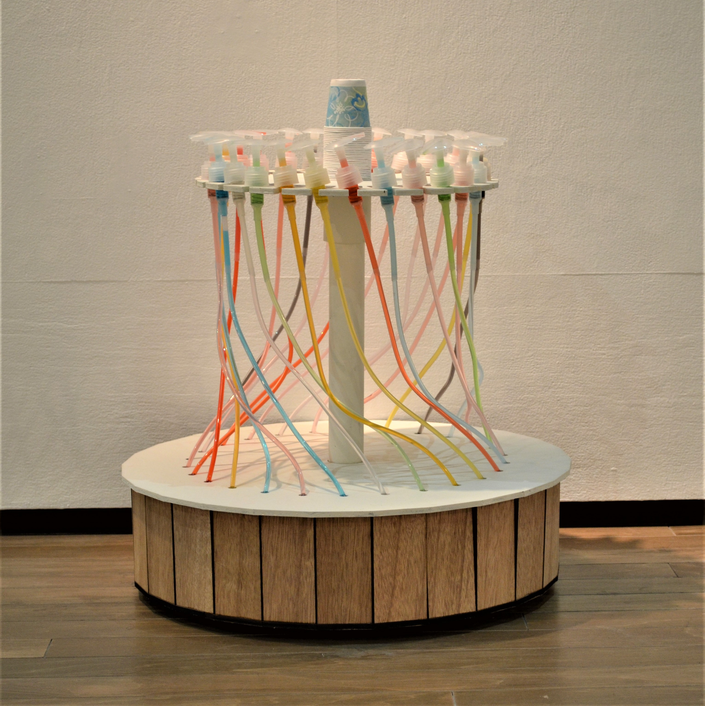
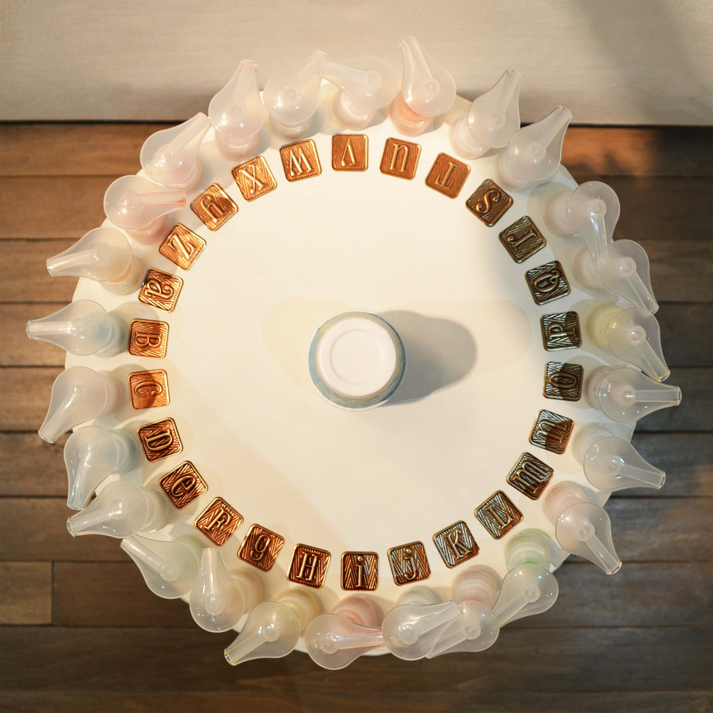
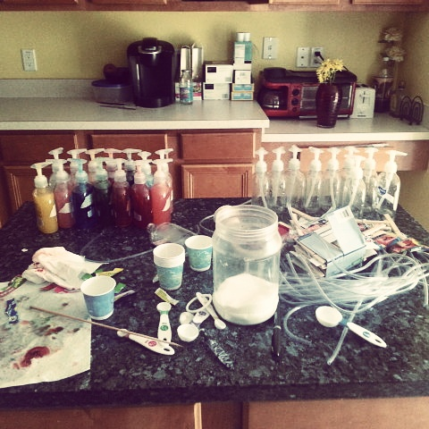
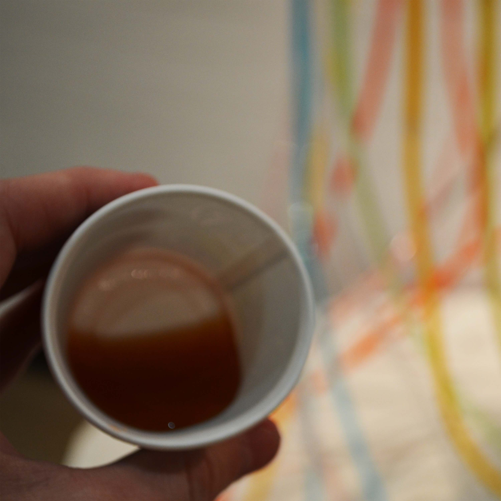

Tasteful
A synesthetic experience
For people with synesthesia, one sense (let's say hearing) triggers the experience of an additional sense (like vision). I can hear you saying "What? How?!" Here, read an article. But yes, synesthetes may hear colors, see Friday off to the right, or tell you your name tastes like blueberry.
Since it would be impossible to replicate the complex cognitive science of real synesthesia, here's a bit of thoughtful amusement: A device that translates words to flavors!
   Built from laser cut wood and empty soap pump bottles, it's as easy as typing the letters right into your cup. It's all Kool-Aid, so the flavors are distinct yet compatible. But watch out if you want to taste words with less common letters like Z and X. They're on the potent side. So get at it! Find out the taste of unicorns, or purple, or even your own name.